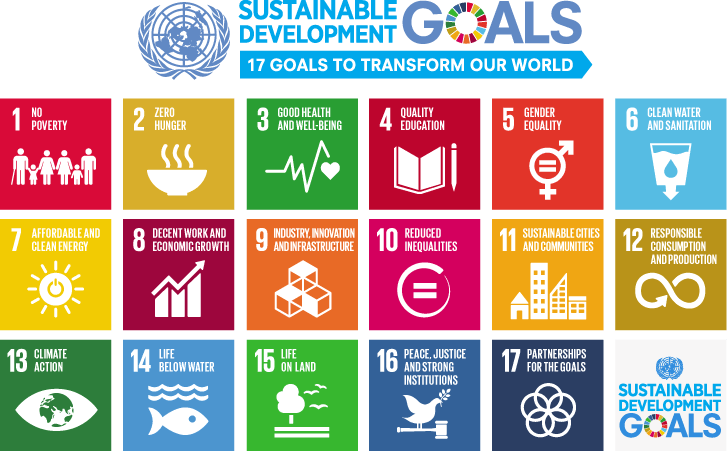

The Sustainable Development Goals, also known as the SDGs, are 17 global goals designed to help create a better and more sustainable future for everyone.
They focus on important challenges such as poverty, education, health, equality, clean water, climate change and protecting our planet.
The SDGs matter because many problems in the world affect people, animals and the environment.
By understanding these problems, we can make better choices and encourage other people to take positive action.
You do not have to solve a huge global problem by yourself. Small actions from many people can create a big impact.
For example, we can reduce plastic waste, save water, recycle correctly, avoid wasting food and encourage other people to care for the environment.
Our campaigns turn awareness into action.
Each campaign focuses on an important issue and suggests simple actions that people can take to help.
Explore Our CampaignsEvery positive action matters. Start with something small, encourage your friends and family, and help spread awareness.
Start Helping